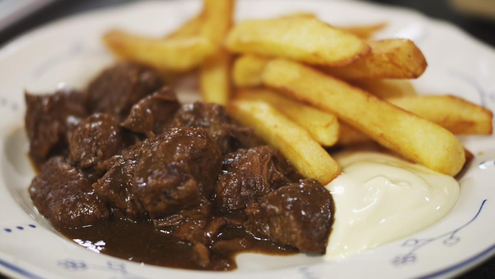

Stoofvlees

Description
Flemish Stew, also known as stoofvlees, is a Flemish beef and onion stew popular in Belgium, the Netherlands and French Flanders, made with beer, thyme, mustard and spiced bread.
Ingredients
- 1 kilo of stewing beef, cut into large chunks
- 2 large onions
- 1 bouquet garni (2 bay leaves, some fresh thyme and flat-leaf parsley)
- 2 cloves
- 2 slices of bread
- 2 tbsp of sharp mustard
- 2 tbsp of Loonse stroop
- 1 litre dark beer
- 1 tbsp vinegar
- few knobs of butter
- vegetable oil
- sea salt and black pepper
Steps
- Peel and roughly dice the onions.
- Melt a knob of butter and about 1 tbsp of oil in a large (preferably cast-iron) casserole over medium heat. Sauté the onions until soft and just starting to brown. Remove from the casserole and put into a large container.
- Add 1 to 2 more tbsp of oil to the casserole. Season the beef and add the meat to the casserole. Brown the beef cubes over medium heat in batches. (About 7 to 8 pieces of meat per batch should do the trick.) Once browned, add each batch to the onions.
- Add the Loonse stroop/syrup and beer to the casserole and turn up the heat. Bring to a boil and scrape the brown bits from the bottom of the casserole.
- Once the stewing liquid comes to a boil, add the onion and beef cubes back to the casserole, along with the cloves and bouquet garni. Give the stew-to-be a good stir and bring to a simmer.
- Next, spread 1 tbsp of mustard on each slice of bread and place both slices (mustard side down) on top of the stew. (They’ll disintegrate completely, adding flavour to the stew and thickening the sauce.)
- Let the stew simmer (uncovered!) for 1.5 hours, stirring every 30 minutes. Then pop a lid on and simmer for another 15 minutes. This adds a touch more moisture back to the casserole, which the dish will need. Remove from the heat.
- Remove the bouquet garni (and cloves, if you can find them). Add the tablespoon of vinegar, and give your stoofvlees a good stir.
- Now comes the most difficult part. Leave it alone for at least 12 hours (with the lid on). The flavours will build up even more. It can be eaten straight away as well, but it will always taste better the day after.